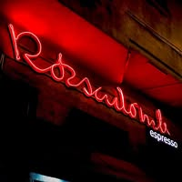
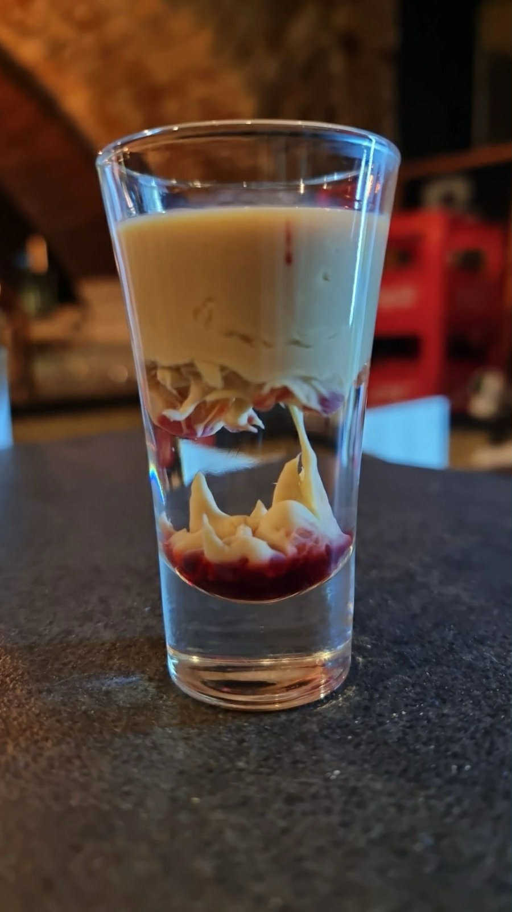
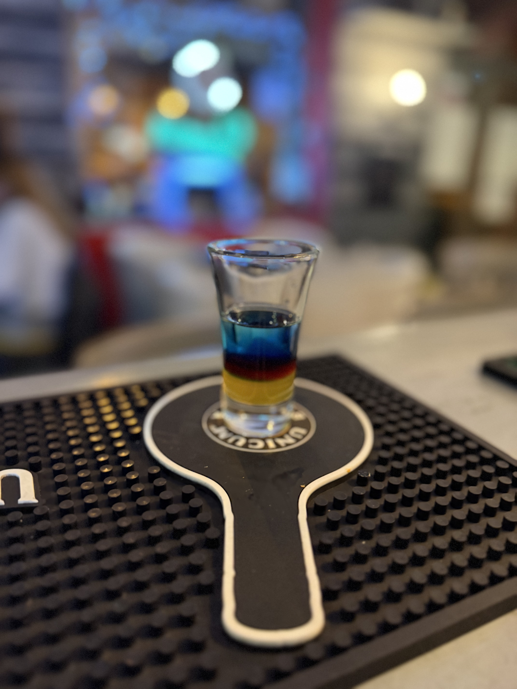
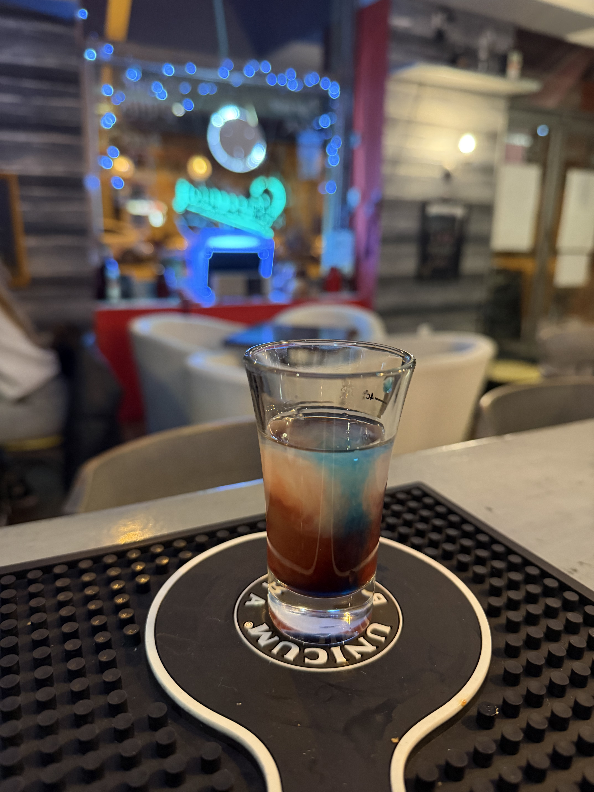
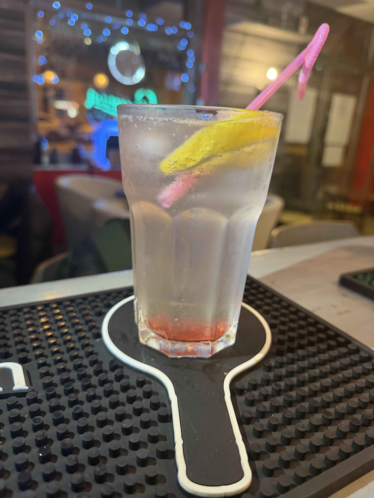

Rózsadomb Espresszo & Café
ÓRIÁSI HALLOWEEN LEÁRAZÁS
FIGYELEM!! EZEK KIZÁRÓLAG SPECIÁLIS HALLOWEENI ITALJAINK, A TELJES ITALLAP BENT A HELYISÉGBEN MEGTEKINZHETŐ!
Rövid Italjaink Halloween-re
10db - 5500ft

Vodka, Bailleys, Grenadine
Édes, krémes, enyhén gyümölcsös, kicsit „szirupos” shot
10db - 4500ft

Vodka, Blue Curacao, Marakuja Grenadine
édes, trópusi-gyümölcsös, citrusos háttérrel, kissé „szirupos” shot
10db - 3500ft

Vodka, Baileys, Grenadin Blue Curacao
édes, krémes Baileys és a grenadine gyümölcsös-szirupos íze
Long drinkek Halloween-re
ALKONYAT - 990ft

Vodka, szóda málnával és kiwivel